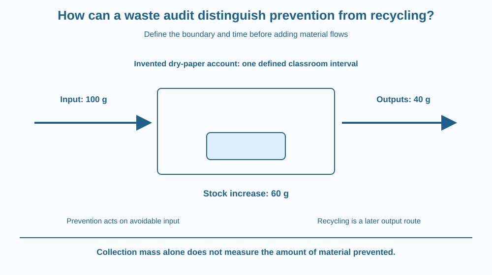

Use a material-flow audit to distinguish preventing waste from collecting it for recycling. Define a boundary and interval, track inputs, outputs and stock changes, and keep different material streams separate. Do not treat a clean-looking recycling bin as proof that unnecessary inputs were avoided.
A classroom fills a paper-recycling box and celebrates the amount collected. The collection is useful, but it does not reveal whether the class could have avoided producing some of that waste in the first place.
Another class uses fewer new sheets and produces less discarded paper, so its recycling box looks less impressive. Which observation better answers a prevention question?
A material-flow account follows what entered, what remained in use and what left. It can recognise recovery while still identifying opportunities to reduce avoidable input.
An audit is a structured examination of records or observations against a defined question. For a material-flow audit, specify the boundary, such as one classroom, and the interval, such as an invented model week.
Inputs are materials entering that boundary. Outputs leave it through routes such as reuse transfer, recycling collection or disposal. Stock change is the material remaining within the boundary in stored or useful form compared with the start.
For a simple dry-paper model without other transformations, input equals outputs plus stock increase over the interval. An invented example with 100 grams entering, 40 grams leaving and 60 grams added to stock balances. These are arithmetic values, not a real school's waste statistics.
Prevention reduces the need for material that would otherwise become waste. Examples can include avoiding unnecessary copies or reusing a suitable existing sheet. The action changes the upstream flow into the system.
Recycling recovers material after it is no longer used in its current form. It addresses an output route. A good collection system does not automatically show that the original amount purchased or printed was necessary.
Keep categories and units consistent. Combining wet food mass with dry paper can hide different processes and handling needs. A count of items and a mass in grams should not be added as if they were the same quantity.
Repeated transfers can also cause double counting. A reused sheet moved between two desks inside the same classroom has not necessarily crossed the chosen boundary. The audit must track the level of the system rather than record every internal movement as a new input.
A material-flow audit differs from a full product life-cycle assessment. It examines flows within the chosen organisation or activity. Manufacturing and wider impacts may require additional evidence. Neither a large collected mass nor a small bin alone determines every environmental outcome.
Draw a classroom box with arrows entering, leaving and remaining as useful stock. Put separate output arrows for reuse elsewhere, recycling and disposal. Preserve the material identity along each route.
Next add a prevention action before an input arrow. The arrow becomes smaller in a qualitative comparison, while the collection route remains a different part of the diagram.
Then move a sheet between desks inside the box without crossing the boundary. This demonstrates why an audit counts crossings and changes consistently rather than treating every handling event as new consumption. The boundary makes the numbers interpretable.
The SVG shows a classroom boundary with paper input, useful stock and three output routes. A separate prevention arrow reduces unnecessary input before it enters. A recycling loop begins after use.
The invented 100-gram accounting example appears in a side panel with the dry-paper assumption. No values are attributed to a real school or municipality.
The diagram distinguishes physical material flows from environmental impact scores. It does not imply that all collected recycling is actually reprocessed or that one bin measurement proves a complete sustainability outcome.

Indian schools can examine clean paper records and unused-material inventories without sorting unsafe waste. Purchase and printing logs can reveal opportunities that a bin-only observation misses.
A recovery route also needs verification. Material placed in a labelled box may need further collection and processing; the classroom's observation establishes only its documented part of that route.
No student should open mixed waste, handle sanitary material, batteries or unknown discarded objects for this lesson. The design can use fictional records or clean paper props, leaving actual waste management to responsible adults.
Use paper, a pencil and the invented 100-gram model.
Do not present the numbers as measured waste. If using real clean-paper records later, keep the method and interval consistent. The paper exercise teaches accounting and pathway choice without requiring children to inspect a bin.
Why can a smaller recycling total be compatible with successful prevention? Follow the upstream input rather than judging performance only by the amount collected.
Now imagine the audit starts with existing paper stock but ignores it. What could happen to the apparent balance? Starting and ending stock matter when outputs can come from material that entered before the observation interval.
What must a material-flow audit define first?
Answer: A — Boundary and time determine which flows and stock changes belong in the account.
Why are prevention and recycling different audit actions?
Answer: C — Prevention reduces avoidable inputs, while recycling recovers material after use.
Invented dry-paper input is 100 g and outputs 40 g with no other changes. What stock increase balances it?
Answer: B — The remaining 60 grams accounts for input minus documented outputs in the simple model.
Create an audit sheet with boundary, interval, material category, input, output routes, starting stock, ending stock and uncertainty. Include a separate column for proposed prevention actions.
Use the invented example to check arithmetic, then state what real records would be needed. Your conclusion must distinguish a collection observation from a verified recycling outcome and must not assign an unsupported environmental-saving percentage.
A successful prevention measure can make the most visible waste activity smaller. Less material in a collection box may mean less avoidable material entered the system, not worse environmental behaviour. Looking upstream changes what counts as evidence of improvement.
A material-flow audit tracks inputs, outputs and stock within a clear boundary; prevention changes unnecessary inputs, while recycling manages a later material route.